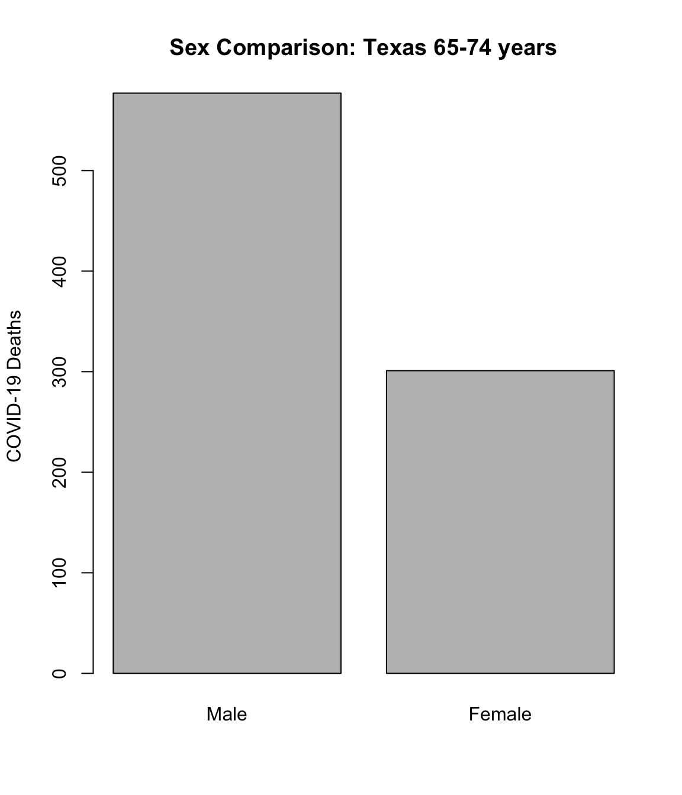
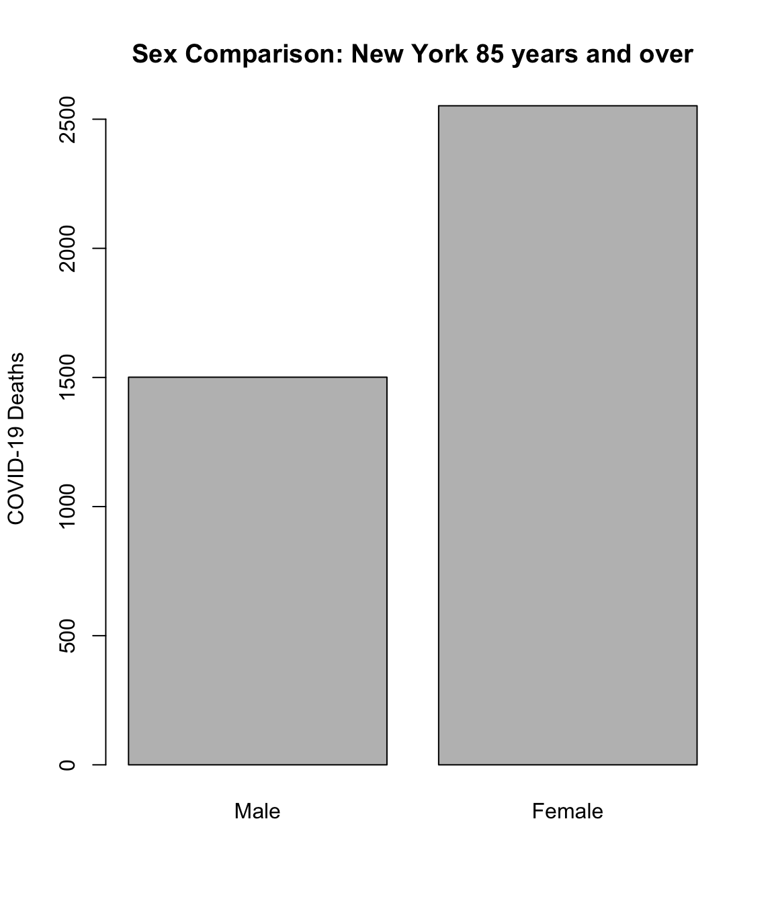

6.2 Writing Functions
Throughout this course, we’ve been using various R functions, like print, sum, is.na, and hist.
Each of these functions does different things, but they all obey similar rules.
First we’ll think carefully about what all R functions have in common, then we’ll see how you can write your own functions to suit your needs!
6.2.1 The Components Of A Function
As an example, consider the sum function:
[1] 6When R runs this function, it takes a numeric vector and computes the sum of its elements.
The numeric vector is specified by you, the programmer, and it’s formally called an argument.
The argument can be thought of as the “input” into the function.
Some functions use more than one argument, like the seq function:
[1] 3 4 5 6 7 8 9while others functions might have no arguments, like getwd:
[1] "/Users/lanedrew/Documents/Teaching/STAT158_SU23/Module1"Other functions can work with different numbers of arguments, like the combine function, c:
[1] 1[1] 1 2[1] 1 2 3Thinking back to the sum example, we also notice that the function produces a result, which is the sum of the elements of the vector.
This result is called a return value, because it’s something that the function “returns” back to you after it has finished running.
Return values can be assigned to R objects:
[1] 6The combine function’s output is a vector, which we can assign to an object called w:
[1] "a" "b" "c"Sometimes a function doesn’t have a return value, as with the rm function:
# rm doesn't have a return value, which is why result is NULL (i.e. no object)
result <- rm(w)
print(result)NULL
Remember what the rm function does?
Aside from the arguments and the return value of a function, we can talk about what the function actually does.
The sum function obviously computes the sum of a vector, but the sqrt function takes the square root of a number:
[1] 7.615773As we will see shortly, what a function does is determined by the code in its body.
That’s right, functions are basically a collection of code that is combined in a convenient package.
We can even examine the code for a function by typing its name without parentheses.
Here’s the sort function:
function (x, decreasing = FALSE, ...)
{
if (!is.logical(decreasing) || length(decreasing) != 1L)
stop("'decreasing' must be a length-1 logical vector.\nDid you intend to set 'partial'?")
UseMethod("sort")
}
<bytecode: 0x1397b8ca8>
<environment: namespace:base>Now, there are some things in this output that may be confusing and that we won’t explain in this book, but at least some of the output should look like R code to you!
Here’s another example, the mean function:
function (x, ...)
UseMethod("mean")
<bytecode: 0x13aa5f678>
<environment: namespace:base>This example doesn’t seem to have as much R code in it, so where is the code for this function?
The answer is that both sort and mean (and many other R functions) are written in a different programming language, C, which isn’t human readable once it’s compiled.
Don’t worry too much about this, except that we will use the same method to view the code of our own functions later.
The way we’ve described R functions as being arguments, a body, and a return value, is mostly correct, but there is also something called the environment of the function, which is essentially scoping, if you are familiar with that concept from other programming languages. We will discuss scoping briefly here but not in detail. For more on functions, check out this link.
6.2.2 Writing A Function
The beauty of functions in R is that you can write your own! All you have to do is specify the arguments, body, and return value for your function. Here’s a simple example how to define a function:
# Create function which adds 1 to the input argument
add_one <- function(x){
y <- x + 1
return(y)
}
# Test out the function
add_one(100)[1] 101Here we define a function called add_one, using the assignment operator <-, just like when we define new vectors, data frames, integers, etc.
- The statement
functionsignifies that we are defining a new function, and the parentheses surround any arguments that this function accepts. Here, we have just one argument calledx. - The body of the code has just two commands. The first command creates a new variable
yby adding 1 to the argumentx. The second command specifies thatywill be the return value of the function. - The function is used by writing its name
add_oneand specifying the arguments in parentheses (100). Technically we are specifying that the value ofxis 100. - When the function is run, we see the return value (100 + 1) displayed in the output.
Let’s view the code of the function we just wrote:
function(x){
y <- x + 1
return(y)
}Here it shows us exactly the code that we used to create the function. Let’s use the function a few more times:
[1] 11[1] 4
It’s possible re-define the built in R functions by choosing a
function name that already exists (print for example), but
this is a very bad idea. This can make your code very difficult
to understand, and potentially unpredictable!
Sometimes it’s not necessary to specify a return value. If you don’t, then R will take any output generated by the last command in the function and return it:
[1] 14But you must be careful, because some commands produce no output. Remember that if we type math, then R will print the result:
[1] 2but if we assign the result to a variable, R will not print anything (the result is assigned to the variable instead):
This is how it works for function return values as well. So if we write a statement at the end of a function, but assign the result to a variable, R will not return the value.
add_three <- function(x){
y <- x + 3 # The results are assigned to y, but y is not returned
}
add_three(4) # This returns nothing(add_three(4))
Now let’s look at a more complicated example that has two arguments:
# Function to raise x to the y-th power
pow <- function(x, y){ # Here we specify the function has two arguments.
p <- x^y
return(p)
}
# Test the arguments with x=2 and y=3
pow(2, 3)[1] 8There’s an important lesson to learn from this example.
When we tested the function, R used 2 as the value of x and 3 for the value of y (after all, 2 cubed is 8), and this is because of the order that the arguments were supplied.
When we defined the function, we specified that x and y are the arguments, in that order.
Then when we called the function, we put 2 first and 3 second.
Perhaps this is obvious, but strange things are possible, because R also allows you to specify the arguments by name like so:
[1] 8So far this gives the same result, but watch what happens if we do this instead:
[1] 9This time, R computed 3 squared instead of 2 cubed, even though we specified y first and x second.
When you specify parameters by name, R will ignore the order that they are given in.
R also allows you to specify some arguments by name and some by position, as long as the position arguments come first. For more, see here.
(No need to turn this in) Write a function called math
which has three arguments, a, b, and c. In the body of the function,
write code which computes a - b * c, store the result as x, then specify
the return value of the function to be x. Demonstrate the use of your
function with a few examples.
6.2.3 Using Functions for Data Analysis
Functions offer many of the same advantages as loops: They allow you to write less code and do more.
Let’s see how functions might be used for data analysis.
Suppose we want to compare deaths between men and women for particular states and age groups.
Here’s a barplot for Colorado in the 45-54 age group:
# Extract just the state and age group of interest
covid2 <- covid[(covid$State == "Colorado") & (covid$Age.group == "45-54 years"),]
# Create a bar plot
barplot(covid2$COVID.19.Deaths, # Specify column to plot
names.arg = covid2$Sex, # Specify bar names
main = "Sex Comparison: Colorado 45-54 years", # Title
ylab = "COVID-19 Deaths") # y labelSuppose we wanted to view this information for more states and age groups. Rather than repeat the above code each time, let’s put it in a function:
# Create a function called plot_fm with two arguments: state and ages
plot_fm <- function(state, ages){
covid2 <- covid[(covid$State == state) & (covid$Age.group == ages),]
barplot(covid2$COVID.19.Deaths,
names.arg = covid2$Sex,
main = paste("Sex Comparison:", state, ages),
ylab = "COVID-19 Deaths")
return(NULL)
}Now let’s try out the code on a few states and age groups:

NULL
NULL
NULLNotice that our function doesn’t actually return anything, but it does produce a plot while running. The plots produced by this function are one example of side effects, which are changes that persist after the function is completed, and that aren’t the return value.
If you tried to run plot_fm("Colorado", "5-14 years"), R would produce an error.
This is because both the COVID.19.Deaths column for that State/Age group is NA, and R needs at least one non-NA value to determine the limits of the y axis.
To get around this error, we could write extra code to manually set the y limits and specify them while plotting, like so:
covid2 <- covid[(covid$State == state) & (covid$Age.group == ages),]
# Set the maximum y limit manually, in case there are NA values
ymax = max(covid2$COVID.19.Deaths, na.rm = T)
if(ymax == -Inf) ymax <- 1
# Create the plot
barplot(covid2$COVID.19.Deaths,
names.arg = covid2$Sex,
main = paste("Sex Comparison:", state, ages),
ylab = "COVID-19 Deaths",
ylim = c(0, ymax))
return(NULL)
(No need to turn this in) Make a function with arguments for state, sex, and age group, and print out the COVID 19 deaths, Total Deaths, Pneumonia Deaths, and Influenza Deaths for that demographic.
6.2.4 Function Scope
There’s another important concept for functions in R, called scope, which is best illustrated through the following example:
Error in eval(expr, envir, enclos): object 'XYZ' not found
[1] 2This function has no arguments, but it does create a new object called XYZ, which is returned from the function.
Notice, however, that printing out XYZ gives an error.
This is because the object XYZ only exists in the scope of the function simple_f, and is “forgotten” after the function finishes running.
This is true for any objects created inside any function (with one exception, noted in the bonus block below).
Variables defined outside of functions are in the global scope, which means they can be accessed anywhere, both inside and outside functions:
[1] "hello"It’s also important to realize that variables in different scopes can have the same name without conflict.
For example, we can use x as the argument to a function and as a variable outside of the function.
R will search the current scope first, then look outside of the current scope if it can’t find an object.
# Define x and y in the global scope
x <- "a"
y <- "b"
f <- function(x){
print(x) # This is NOT the global x
print(y) # There's no y in the function scope, this is the global y
}
f("c")[1] "c"
[1] "b"In the above example, x was defined inside the function f (it’s the name of the first argument), so the global x is ignored.
However, y is not defined inside the function, so R uses the y from the global scope.
In an earlier chapter, we briefly mentioned the assignment operators
<<- and ->>, but didn’t say what
made them special. It turns out, they are able to assign objects in the
global scope from inside functions. You can test this by altering the
simple_f function in a previous example (above) by
replacing the command XYZ <- 2 with the command
XYZ <<- 2 and observing the result. This assignment
operator should almost never be used, as it can cause confusion
and unpredictable behavior if used in a more complicated R program.
When writing functions, it helps to start simple. It’s easy to make a complicated function, but when you try to put it into use and it doesn’t work, debugging the issue can be equally complicated.
You may be familiar with “pointers” in other languages, and the difference between “pass by value” and “pass by reference”. In most ordinary circumstances with R, there is only pass by value.
(No need to turn this in) When discussing Objects in a previous
chapter, we mentioned that everything in R is an object, and every
object has a mode and length. Pick an R
function, or create your own function, and print its mode
and length.
Any feedback for this section? Click here